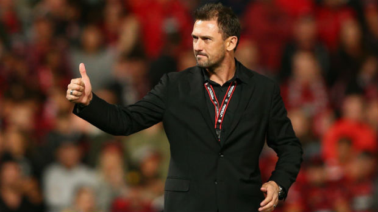

The Western Sydney Wanderers one of the greats of A-League Football winning the Asian Champions League two years ago and has won the A-League Premiership once in its short history. The Wanderers season started with a destruction against Sydney FC (their rivals) losing 4-0. With a red card to Aritz Borda there new signing they fell to 10 men. This resulted in 2 goals one from a free kick and one from a quick counter attack. Although the Wanderers played exceptionally well in the last half of the first half with new signing Jumpai making some good runs and good passes. Althought the Wanderers couldn't find the back of the net they still created some good chances which is promising.
The Western Sydney Wanderers was first founded on April 4th 2012. From then on the Wanderers established a strong first season winning the A-League Premiership and contestng the 2013 Grand Final against Central Coast Mariners but lost 2-0. The Wanderers then backed up that season by contesting the 2014 A-League final against Brisbane Roar losing 2-1 in EXtra Time and also came second. And to cap off that season the y were crowned the Champions of Asia beating Al-Hilal 1-0 on aggregate and became the first ever Australian team to win the trophy. And by winning this they earned the right to represetn AFC at the 2014 FIFA Club World Cup, entering at the quaterfinal stage. They were knocked out by Cruz Azul 3-1 (one of the best teams in South America) on a pitch that was drowned in water and it wasnt called off which caused the ball to stop suddenly in puddles. And in 2015 they had there worst season ending second last above Newcastle Jets on 18 points. After this dreadful season they then contested the A-League Final and once again lost the final 3-1 to Adelaide United.
The manager for the WSW Wanderers is Tony Popovic and is without a doubt the best manager in the A-League. He has stuck with the club from the beginning and has brought great success to the club winning the Asian Club Chsmpionship but has not yet won the A-League title. He has played for Australia many tims and as a star and has played for Crystal Palace in England. He has been offered to coach Crystal Palace but he has turned down this offer to stay with the Western Sydney Wanderers. Although there has been rumours of Tony Popovic leaving by the end of the season.
